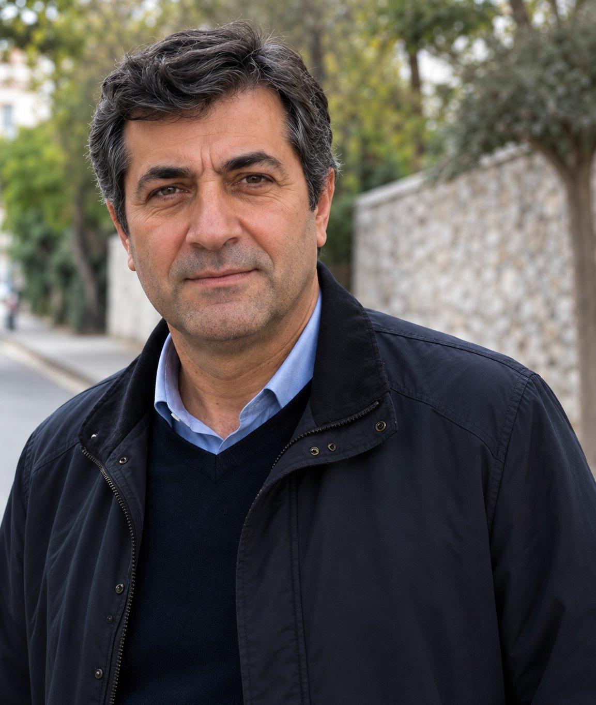

Ücretsiz · Üyeliksiz · Reklamsız
Hesap karmaşasını bitiren araçlar.
Maaştan tazminata, vergiden krediye — Türkiye mevzuatıyla çalışan, açık kaynak hesaplayıcılar. Girdiğiniz hiçbir veri tarayıcınızdan çıkmaz.
- Araç
- 22
- Ücret
- 0 her zaman
- Veri
- Resmî kaynağından
İmza proje
Bordro
Brüt Net Maaş Hesaplama
Güncel vergi dilimleri, SGK tavanı, asgari ücret istisnası ve damga vergisiyle ay ay 12 aylık bordro dökümü. Netten brüte de hesaplar.
Aracı aç →- Vergi dilimi
- %15–40
- SGK tavanı
- 297.270
- Damga
- ‰7,59
- Bordro
- 12 ay
Dizin
Bütün araçlar
22 araç
01Kıdem ve İhbar TazminatıGüncel tavan, giydirilmiş ücret, PDF raporTazminat
02İşsizlik MaaşıÖdenek tutarı, tavan ve süreTazminat
03Serbest Meslek MakbuzuStopaj, KDV ve tevkifatVergi
04KDVDahil ve hariç tutarVergi
05Motorlu Taşıtlar VergisiTarife, taksit ve projeksiyonVergi
06Araç ÖTVÖTV + KDV ve anahtar teslim fiyatVergi
07Gümrük VergisiYurt dışı alışveriş ve IMEI harcıVergi
08KrediTaksit ve ay ay ödeme planıFinans
09Vadeli MevduatStopaj ve net getiriFinans
10Kira ArtışıTÜFE'ye göre yasal azami oranFinans
11TCMB Döviz KurlarıHer iş günü otomatik güncellenirVeri
12YüzdeOran, indirim, artış ve azalışGenel
13Birim ÇeviriciUzunluk, ağırlık, sıcaklık ve fazlasıGenel
14Hesap BölüşmeKişi başı tutar ve bahşişGenel
15Yaş HesaplamaYıl, ay, gün ve doğum gününe kalanGenel
16Final NotuGeçmek için gereken notGenel
17İnternet Hız Testiİndirme hızı ve pingGenel
18Son DepremlerCanlı liste ve arşiv sorgusuVeri
19KeyMintGüçlü şifre üreteciGüvenlik
20DecorPaletteErişilebilir renk paleti üreteciTasarım
21Dither StudioRetro ve piksel görsel efektleriTasarım
22Brüt–Net Maaş Tablosu35.000'den 500.000'e net karşılıklarBordro
Bugün
Merkez Bankası kurları
4 Eylül 2026 · her iş günü yenilenirDolar
48,32
Euro
56,16
Sterlin
65,50
Frank
59,87
Yen
0,31
Kim yapıyor

“Bir ihtiyacı mümkün olan en az sürtünmeyle karşılamak. Üyelik istemeyen, reklam göstermeyen, veri toplamayan ve saniyeler içinde sonuç veren araçlar.”Koray Öner — yazılım geliştirici. Hakkımda →